神秘信息部
信息部：电协背后的小可爱
你是否知道
在这个如此成功的电协背后
有一个如此低调，有内涵的部门
——信息部
知道吗
你所见到的每一次电协活动的
宣传资料、视频、海报、文案
均出自信息部之手
这群有内涵的小伙伴们身为电协一员
同样拥有刷代码，做机器的特殊属性
现在
这些平时活跃于幕后的小伙伴们
就要出来与大家见面啦
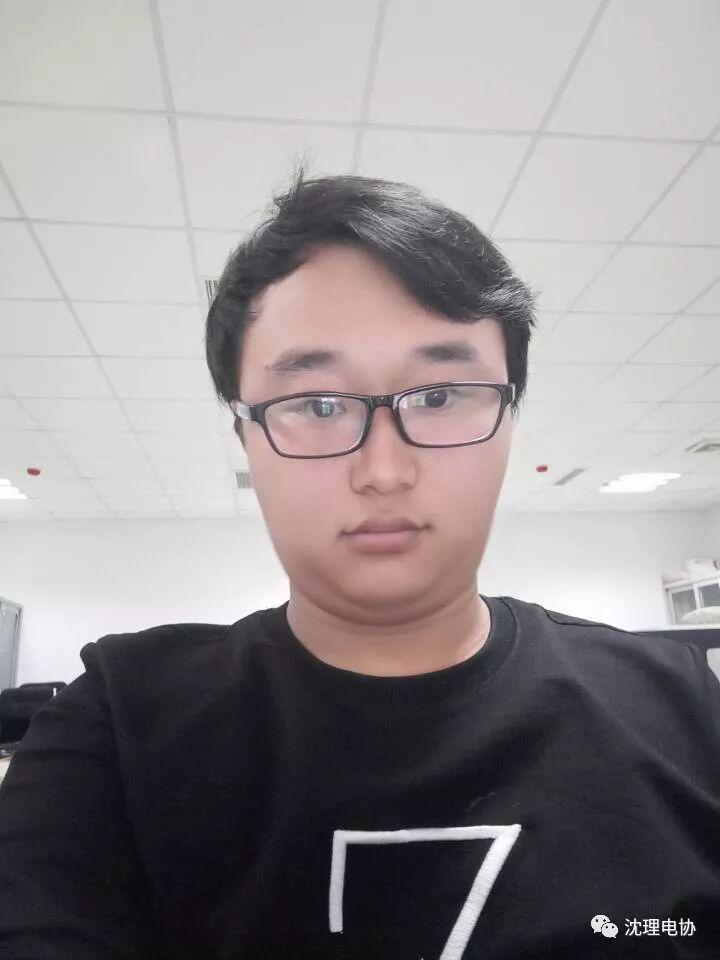
信息部大大佬
刘舒宇
小哥哥
超萌有没有
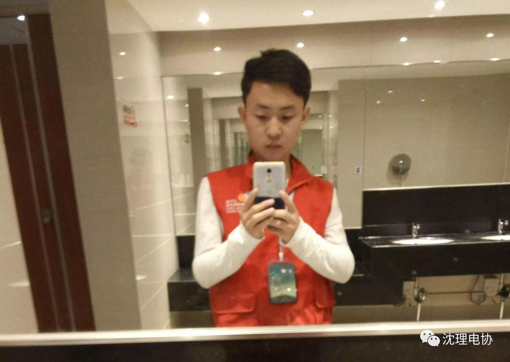
来自信息科学与工程学院
电子信息科学与技术
王宁
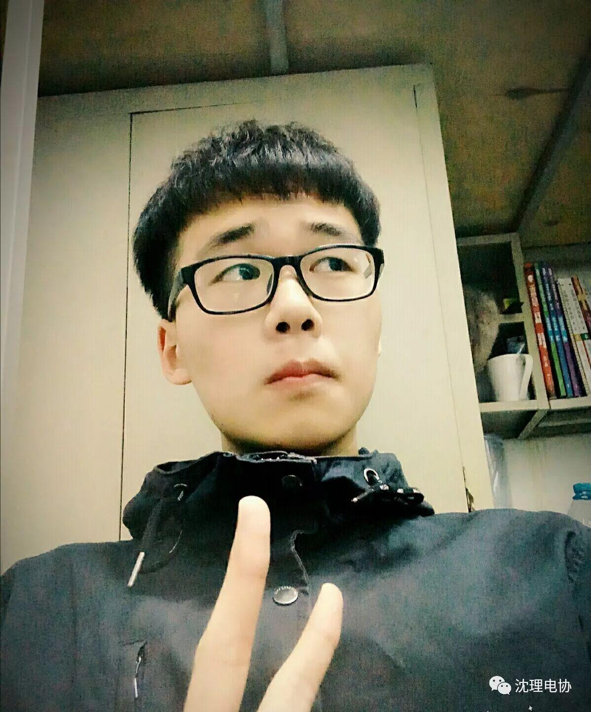
希望你的故事能出现在我下一个笑着说出的桥段里
——范淼
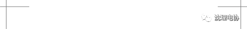
住亦无忧恼。
我爱明镜洁，
叫啸含仙曲。
康庄有逸轨，
宁知天子贵。

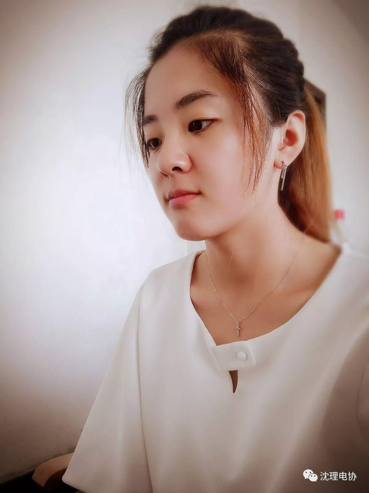
信息部16级干事，电子信息工程，张婉娱，个性比较慢热，很希望和17级小干事们共同努力，让电协更强大上进。同时不要忘了学业很重要哦
王喆
性别男
爱好女
年方19，至今单身，欢迎来撩
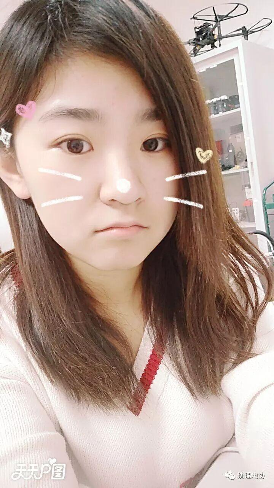
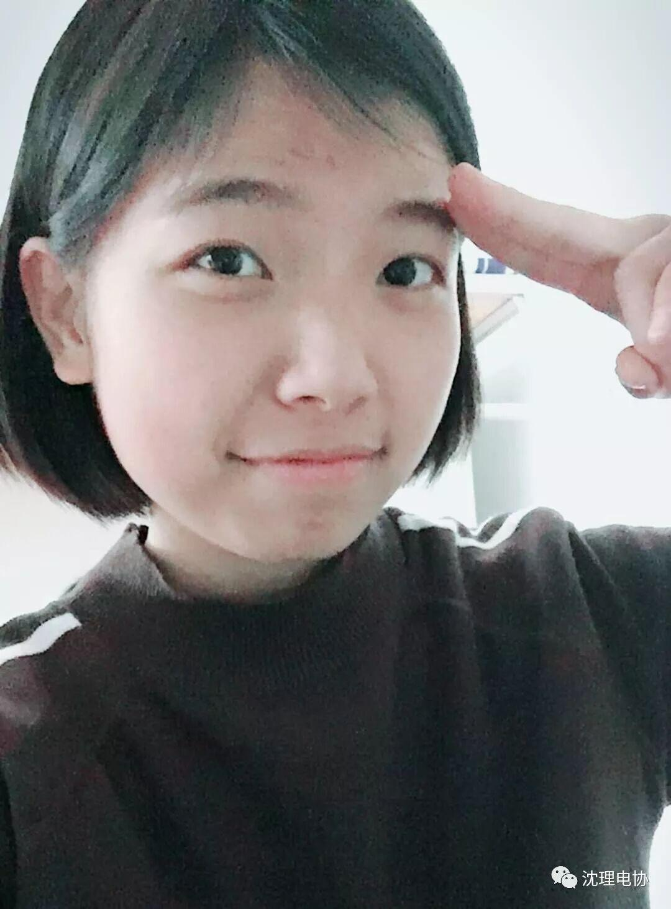
看过海贼王或者加入某网球俱乐部的童鞋，应该都知道这个名字。上得了B站，下得了面条，斗了了地主，打得了王者，大家好，我叫罗杰，一个集活泼与内敛于一身的小王子，咳，女子，人还不错哦～
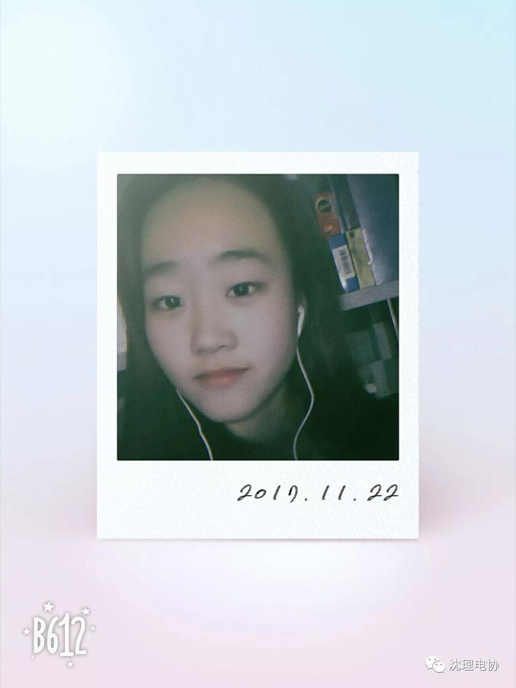
席子雯
来自17级信息院优秀的物联网专业
平时喜欢看看书听听歌打打王者什么的电协最棒，信息部最棒！
o(*////▽////*)q
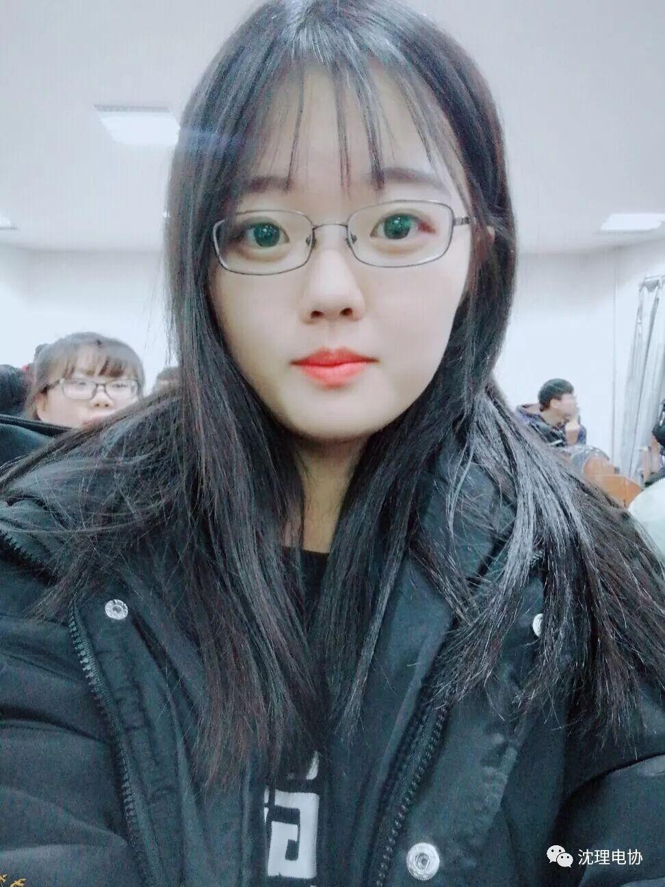
大家好，我是17级通信专业的毕光宇(single)，爱听的歌曲是达拉崩吧，平时喜欢欣赏鬼畜视频，但在视频制作方面仍是一条咸鱼。
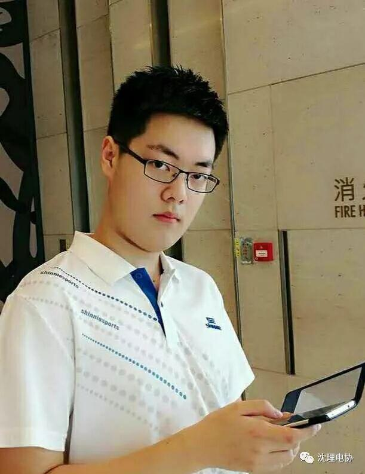
我安静 只是安静的好像不太明显
我温柔 只是温柔的方式有些特别
我爱你们 只是还不好意思表达
我爱电协 只是现在才正式表白
大家好，我是自动化一班的王明铭，喜欢画画，看书～一生一世一双人，半醉半醒半浮生，感谢与电协与可爱的你们相遇……
大家好我是来自信息学院的申胜勋。在电协行政部的信息部。平时喜欢视频剪辑，打羽毛球和跳舞。希望在今后在电协的日子里，越做越好。
我叫王同远，来自信息科学与工程学院，我是一个外表看起来内向，但心很豪放的一个人！！！非常高兴加入电协这个大家庭，大学四年我们一起走过！！！
我叫阮倩雯，是一个生长在河南的重庆妹子，喜欢刻章剪纸手账绘画……所有的有趣的事情我都喜欢。加入电协之后我希望自己可以继续不忘初心，不安平庸，继续做一个更好的自己。
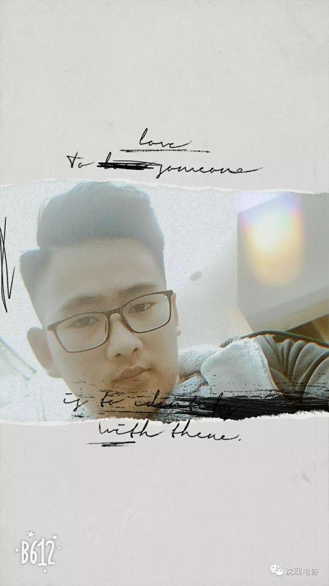
树，站成永恒，没有悲欢的姿势。一半在土里安详，一半在风里飞扬，一半洒落阴凉，一半沐浴阳光，非常沉默非常骄傲，从不依靠从不寻找。余生愿我们像树一样，即使没有人爱，我们也要努力做一个可爱的人。不埋怨谁，不嘲笑谁，也不羡慕谁，阳光下灿烂，风雨中奔跑，做自己的梦，走自己的路。
我来自信息科学与工程学院 电子信息工程专业 一个热心的沈阳人 我爱唱歌 爱运动 喜欢交朋友 很高兴在电协遇见大家。
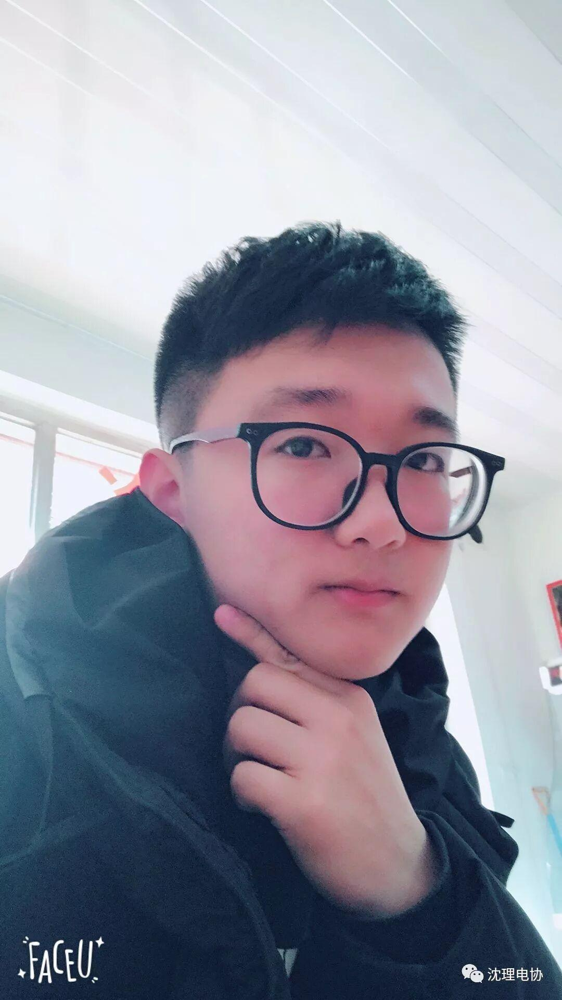
17级自动化的小白一枚
非常高兴能够加入电协，
请大家多多关照。
——刘聪
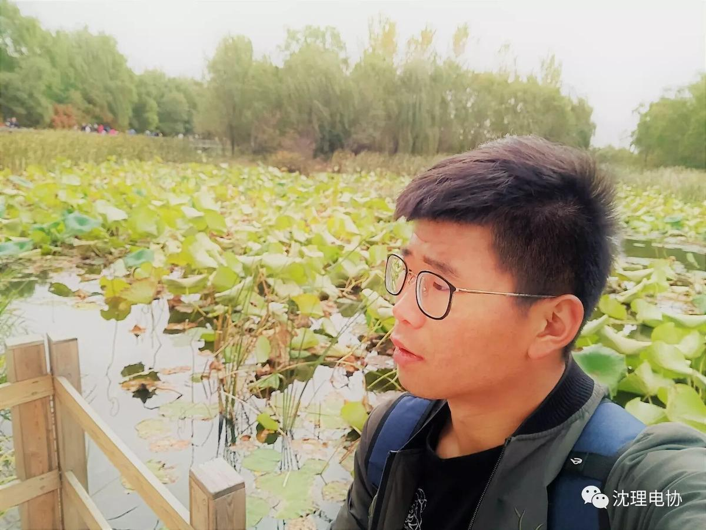
大家好，我是张涛，电协信息部一名成员。我认为漫漫人生，不尽意事时时有，留点遗憾总是好！但是希望在电协这个大家庭中，我能与你们一起开心走过，不留下遗憾。
编辑| 刘聪


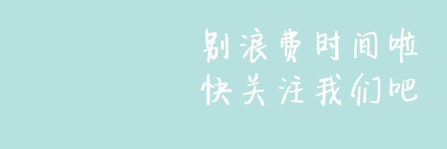